Moves
| Move | Type | Category | Power | Energy | Cooldown | Effect | |
|---|---|---|---|---|---|---|---|
| Absorb | Grass | Special | 20 | 35 | 5s | Absorb deals damage and the user will recover 50% of the HP drained. | |
| Acid | Poison | Special | 40 | 40 | 6s | Acid deals damage and has a 10% chance of lowering the target's Special Defense by one stage. | |
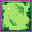 | Acid Armor | Poison | Status | – | 100 | 60s | Acid Armor raises the user's Defense by two stages. |
| Acid Spray | Poison | Special | 40 | 55 | 9s | Acid Spray inflicts damage and lowers the target's Special Defense by two stages. | |
| Acrobatics | Flying | Physical | 55 | 55 | 13s | Acrobatics deals damage and has no secondary effect. | |
| Aerial Ace | Flying | Physical | 60 | 60 | 14s | Aerial Ace deals damage and ignores changes to the Accuracy and Evasion stats. | |
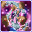 | Aeroblast | Flying | Special | 100 | 110 | 23s | A vortex of air is shot at the target to inflict damage. Critical hits land more easily. |
| Agility | Normal | Status | – | 80 | 20s | Agility raises the user's Speed by two stages. | |
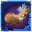 | Air Cutter | Flying | Special | 60 | 70 | 13s | Air Cutter deals damage and has an increased critical hit ratio. |
| Air Slash | Flying | Special | 75 | 80 | 17s | Air Slash deals damage and has a 30% chance of causing the target to flinch. | |
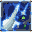 | Ally Switch | Psychic | Status | – | 70 | 30s | Change position with target. |
| Amnesia | Psychic | Status | – | 75 | 60s | Amnesia raises the user's Special Defense by two stages. | |
| Ancient Power | Rock | Special | 60 | 70 | 14s | Ancient Power inflicts damage and has a 10% chance of raising all of the user's stats by one stage. | |
| Aqua Jet | Water | Physical | 40 | 40 | 6s | The user lunges at the target at a speed that makes it almost invisible. | |
| Aqua Ring | Water | Status | – | 100 | 120s | The user surrounds itself with a veil of water, allowing it to restore 1/16 of its max HP at the end of every turn during 16 turns. | |
| Aqua Tail | Water | Physical | 90 | 90 | 14s | Aqua Tail deals damage and has no secondary effect. | |
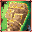 | Arm Thrust | Fighting | Physical | 15 | 50 | 10s | The user lets loose a flurry of open-palmed arm thrusts that hit two to five times in a row. |
| Aromatherapy | Grass | Status | – | 120 | 60s | Aromatherapy cures the user and friend's of sleep, poison, paralysis, freeze and burn. | |
| Assurance | Dark | Physical | 60 | 70 | 13s | Assurance does damage and has no secondary effect. | |
| Astonish | Ghost | Physical | 30 | 30 | 5s | The user attacks the target while shouting in a startling fashion. This may also make the target flinch. | |
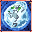 | Aura Sphere | Fighting | Special | 80 | 80 | 13s | The user lets loose a blast of aura power from deep within its body at the target. This attack never misses. |
| Aurora Beam | Ice | Special | 65 | 70 | 16s | Aurora Beam deals damage and has a 10% chance of lowering the target's Attack by one stage. | |
| Avalanche | Ice | Physical | 60 | 70 | 14s | Avalanche deals damage and has no secondary effect. | |
| Barrier | Psychic | Status | – | 100 | 60s | Barrier raises the user's Defense by two stages. | |
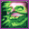 | Belch | Poison | Special | 60 | 60 | 13s | The user lets out a damaging belch at the target. |
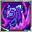 | Bide | Normal | Physical | – | 200 | 30s | The user of Bide 'stores energy' for 2 turns. At the end of the second turn the Pokemon 'unleashes energy', dealing twice the HP damage it received. |
| Bite | Dark | Physical | 60 | 60 | 9s | Bite deals damage and has a 30% chance of causing the target to flinch. | |
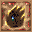 | Blaze Kick | Fire | Physical | 85 | 95 | 19s | The user launches a kick that lands a critical hit more easily. This may also leave the target with a burn. |
| Blizzard | Ice | Special | 110 | 120 | 27s | Blizzard deals damage and has a 10% chance of freezing the opponent. | |
| Body Slam | Normal | Physical | 85 | 85 | 13s | Body Slam deals damage and has a 30% chance of paralyzing the target. | |
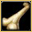 | Bone Club | Ground | Physical | 65 | 65 | 10s | Bone Club deals damage and has a 10% chance of causing the target to flinch. |
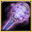 | Bone Rush | Ground | Physical | 25 | 20 | 5s | Bone Rush inflicts damage, hitting the target 2-5 times per use. |
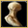 | Bonemerang | Ground | Physical | 50 | 35 | 8s | Bonemerang inflicts damage, hitting the target 2 times per use. |
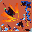 | Boomburst | Normal | Special | 140 | 150 | 30s | Boomburst does damage and has no secondary effect. Pokemon with the Ability Soundproof are not affected by this move. |
| Bounce | Flying | Physical | 85 | 95 | 18s | Bounce deals damage and has no secondary effect. | |
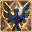 | Brave Bird | Flying | Physical | 120 | 125 | 27s | The user tucks in its wings and charges from a low altitude. This also damages the user quite a lot. |
| Brick Break | Fighting | Physical | 75 | 75 | 12s | Brick Break deals damage, but removes the effects of Reflect before attacking. | |
| Brine | Water | Special | 65 | 80 | 15s | Brine inflicts damage, and its power doubles to 130 when the target is at or below 50% health. | |
| Brutal Swing | Dark | Physical | 60 | 60 | 9s | Brutal Swing does damage and has no secondary effect. | |
| Bubble | Water | Special | 10 | 40 | 3s | Bubble deals damage and has a 10% chance of lowering the target's Speed by one stage. | |
| Bubblebeam | Water | Special | 65 | 70 | 16s | Bubblebeam deals damage and has a 10% chance of lowering the target's Speed by one stage. | |
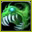 | Bug Bite | Bug | Physical | 60 | 60 | 5s | Bug Bite deals damage and has no secondary effect. |
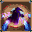 | Bug Buzz | Bug | Special | 90 | 100 | 21s | Bug Buzz deals damage and has a 10% chance of lowering the target's Special Defense by one stage. |
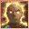 | Bulk Up | Fighting | Status | – | 70 | 60s | The user bulks up its body to boost both its ATTACK and DEFENSE stats. |
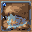 | Bulldoze | Ground | Physical | 60 | 70 | 18s | The user strikes everything around it by stomping down on the ground. This lowers the Speed stat of those hit. |
| Bullet Punch | Steel | Physical | 40 | 50 | 9s | Bullet Punch deals damage. | |
| Bullet Seed | Grass | Physical | 25 | 85 | 17s | Bullet Seed does damage, hitting 2-5 times per use. | |
| Calm Mind | Psychic | Status | – | 70 | 60s | Calm Mind raises the user's Special Attack and Special Defense by one stage each. | |
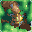 | Camouflage | Normal | Status | – | 90 | 60s | The user's type is changed depending on its environment, such as at water's edge, in grass, or in a cave. |
| Captivate | Normal | Status | – | 60 | 25s | Captivate lowers the Special Attack of the target by two stages, if they are of the opposite gender to the user. | |
| Charge | Electric | Status | – | 100 | 90s | If the user's next move is Electric-type, its base power will be doubled. Charge also raises the user's Special Defense by one stat level. | |
| Charge Beam | Electric | Special | 50 | 65 | 12s | Charge Beam deals damage and has a 70% chance of raising the user's Special Attack by one stage. | |
| Charm | Fairy | Status | – | 50 | 60s | Charm lowers the Attack stat of the target by two stages. | |
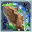 | Chip Away | Normal | Physical | 70 | 70 | 11s | Looking for an opening, the user strikes consistently. The target's stat changes don't affect this attack's damage. |
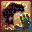 | Circle Throw | Fighting | Physical | 60 | 60 | 13s | Circle Throw does damage and has no secondary effect. |
| Clamp | Water | Physical | 35 | 90 | 15s | The target is clamped and squeezed by the user's very thick and sturdy shell for four to five turns. | |
| Clear Smog | Poison | Special | 50 | 50 | 8s | Clear Smog inflicts damage and resets all stat levels of the target to 0. | |
| Close Combat | Fighting | Physical | 120 | 120 | 18s | Close Combat deals damage but lowers the user's Defense and Special Defense by one stage each after attacking. | |
| Coil | Poison | Status | – | 70 | 60s | Coil raises the user's Attack, Defense by by one stage each and clear Accuracy . | |
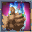 | Comet Punch | Normal | Physical | 18 | 75 | 13s | Comet Punch hits 2-5 times per turn used |
| Confuse Ray | Ghost | Status | – | 50 | 9s | Confuse Ray causes the target to become confused. | |
| Confusion | Psychic | Special | 50 | 60 | 12s | Confusion deals damage and has a 10% chance of confusing the target. | |
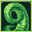 | Constrict | Normal | Physical | 10 | 50 | 15s | Constrict deals damage and has a 10% chance of lowering the target's Speed by one stage. |
| Conversion2 | Normal | Status | – | 200 | 120s | Changes the user's type to one that is resistant (or immune) to the last move used by the target, randomly. | |
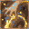 | Copycat | Normal | Status | – | 100 | 30s | The user mimics the move used immediately before it. The move fails if no other move has been used yet. |
| Cosmic Power | Psychic | Status | – | 100 | 60s | Cosmic Power boosts the Defense and Special Defense of the user by one stage each. | |
| Cotton Guard | Grass | Status | – | 150 | 120s | Cotton Guard raises the user's Defense stat by three stages. | |
| Counter | – | Physical | – | 100 | 90s | When hit by a Physical Attack, user strikes back with 2x power. | |
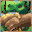 | Covet | Normal | Physical | 60 | 80 | 20s | The user endearingly approaches the target, then steals the target's held item. |
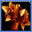 | Crabhammer | Water | Physical | 100 | 100 | 14s | Crabhammer deals damage and has an increased critical hit ratio. |
| Cross Chop | Fighting | Physical | 100 | 100 | 15s | Cross Chop deals damage and has an increased critical hit ratio. | |
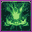 | Cross Poison | Poison | Physical | 70 | 70 | 15s | Cross Poison deals damage and has a 10% chance of poisoning the target. It also has an increased critical hit ratio. |
| Crunch | Dark | Physical | 80 | 80 | 12s | Crunch deals damage and has a 20% chance of lowering the target's Defense by one stage. | |
| Crush Claw | Normal | Physical | 75 | 90 | 12s | Crush Claw deals damage and has a 50% chance of lowering the target's Defense by one stage. | |
| Curse | Ghost | Status | 50 | 100 | 60s | Curse is a unique move that works differently for Ghost-type Pokemon than other Pokemon. Ghost-type Pokemon use 50% of their current HP to place a curse on the target. The cursed Pokemon loses hp during 5 turns. For all other Pokemon, Curse raises the user's Attack and Defense by one stage each and lowers Speed by one stage. | |
| Dark Pulse | Dark | Special | 8 | 95 | 18s | Dark Pulse deals damage and has a 20% chance of causing the target to flinch. | |
| Dazzling Gleam | Fairy | Special | 80 | 90 | 18s | The user damages opposing Pokemon by emitting a powerful flash. | |
| Defense Curl | Normal | Status | – | 60 | 60s | Defense Curl raises the user's Defense by two stages. | |
| Defog | Flying | Status | – | 60 | 30s | A strong wind blows away the target's barriers such as Reflect or Light Screen. | |
| Destiny Bond | Ghost | Status | – | 120 | 60s | After using this move, if the user faints, the Pokemon that landed the knockout hit also faints. Its chance of failing rises if it is used in succession. | |
| Detect | Fighting | Status | – | 100 | 60s | Enables the user to evade all attacks. Its chance of failing rises if it is used in succession. | |
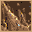 | Dig | Ground | Physical | 80 | 100 | 20s | Dig does damage and has no secondary effect. |
| Disable | Normal | Status | – | 100 | 120s | Disable causes the previous move the target used to be disabled for 100 seconds. If the target has not used any move, then will be random. | |
| Disarming Voice | Fairy | Special | 40 | 50 | 12s | Letting out a charming cry, the user does emotional damage to opposing Pokemon. This attack never misses. | |
| Discharge | Electric | Special | 8 | 90 | 18s | Discharge deals damage and has a 30% chance of paralyzing the target(s). | |
| Dive | Water | Physical | 80 | 100 | 20s | Dive does damage and has no secondary effect. | |
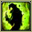 | Dizzy Punch | Normal | Physical | 70 | 75 | 11s | Dizzy Punch deals damage and has a 20% chance of confusing the target. |
| Doom Desire | Steel | Special | 140 | 140 | 24s | Two turns after this move is used, the user blasts the target with a concentrated bundle of light. | |
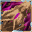 | Double Hit | Normal | Physical | 35 | 65 | 11s | Double Hit hits twice in one turn. |
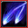 | Double Kick | Fighting | Physical | 30 | 30 | 9s | Double Kick inflicts damage, hitting the target 2 times per use. |
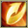 | Double Slap | Normal | Physical | 15 | 30 | 5s | Double Slap inflicts damage and hits between 2-5 times per use. |
| Double Team | Normal | Status | – | 150 | 90s | Double Team increases the user's speed into maximum, creating illusions. | |
| Double-Edge | Normal | Physical | 120 | 120 | 18s | Double-Edge deals damage and has no secondary effect. | |
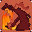 | Dragon Breath | Dragon | Special | 60 | 70 | 19s | The user exhales a mighty gust that inflicts damage. This may also leave the target with paralysis. |
| Dragon Claw | Dragon | Physical | 80 | 80 | 12s | Dragon Claw inflicts damage and has no secondary effect. | |
| Dragon Dance | Dragon | Status | – | 100 | 60s | Dragon Dance raises the user's Attack and Speed by one stage each. | |
| Dragon Pulse | Dragon | Special | 85 | 95 | – | Dragon Pulse deals damage and has no secondary effect. | |
| Dragon Rage | Dragon | Special | 40 | 40 | 9s | Dragon Rage deals damage and has no secondary effect. | |
| Dragon Rush | Dragon | Physical | 100 | 110 | 23s | The user tackles the target while exhibiting overwhelming menace. This may also make the target flinch. | |
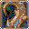 | Dragon Tail | Dragon | Physical | 60 | 60 | 10s | Dragon Tail deals damage and has no secondary effect. |
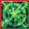 | Drain Punch | Fighting | Physical | 75 | 75 | 12s | Drain Punch deals damage and the user will recover 50% of the HP drained. |
| Draining Kiss | Fairy | Special | 50 | 60 | 12s | The user steals the target's HP with a kiss. The user's HP is restored by over half of the damage taken by the target. | |
| Dream Eater | Psychic | Special | 100 | 120 | 15s | Dream Eater deals damage only on sleeping foes and the user will recover 50% of the HP drained. | |
| Drill Peck | Flying | Physical | 80 | 80 | 12s | Drill Peck inflicts damage and has no secondary effect. | |
| Drill Run | Ground | Physical | 27 | 80 | 15s | Drill Run deals damage and has an increased critical hit ratio. | |
| Dynamic Punch | Fighting | Physical | 100 | 100 | 15s | Dynamic Punch inflicts damage and confuses the target. | |
| Earth Power | Ground | Special | 9 | 100 | 21s | Earth Power deals damage and has a 10% chance of lowering the target's Special Defense by one stage. | |
| Earthquake | Ground | Physical | 50 | 110 | 23s | Earthquake deals damage. | |
| Echoed Voice | Normal | Special | 40 | 50 | 6s | Echoed Voice deals damage and has no secondary effect. | |
| Eerie Impulse | Electric | Status | – | 70 | 30s | The user's body generates an eerie impulse. Exposing the target to it harshly lowers the target's Sp. Atk stat. | |
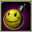 | Egg Bomb | Normal | Physical | 100 | 120 | 23s | Egg Bomb inflicts damage and has no secondary effect. |
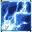 | Electro Ball | Electric | Special | 100 | 100 | 15s | Electro Ball deals damage and has no secondary effect. |
| Electroweb | Electric | Special | 55 | 70 | 15s | Electroweb inflicts damage and then lowers the target's Speed stat by one stage. | |
| Ember | Fire | Special | 10 | 40 | 6s | Ember does damage and has a 10% chance of burning the target. | |
| Encore | Normal | Status | – | 100 | 60s | The user compels the target to keep using the move it encored for three turns. | |
| Endeavor | Normal | Physical | 100 | 90 | 15s | Endeavor deals damage and has no secondary effect. | |
| Endure | Normal | Status | – | 120 | 90s | The user endures any attack with at least 1 HP. Its chance of failing rises if it is used in succession. | |
| Energy Ball | Grass | Special | 90 | 95 | 15s | Energy Ball deals damage and has a 10% chance of lowering the target's Special Defense by one stage. | |
| Eruption | Fire | Special | 150 | 150 | 30s | Eruption does damage proportionately based on the user's HP. This move's base power reduces as the user's HP reduces and is calculated by the formula: Power = 150 x current HP / maximum HP. Hence, at maximum HP (100% HP), the move's base power would be 150. | |
| Explosion | Normal | Physical | 250 | 100 | 180s | Explosion deals high damage, but causes the user to faint. | |
| Extrasensory | Psychic | Special | 80 | 95 | 18s | Extrasensory inflicts damage and has a 10% chance of causing the target to flinch. | |
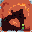 | Extreme Speed | Normal | Physical | 80 | 80 | 15s | Extreme Speed deals damage and has no secondary effect. |
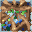 | Facade | Normal | Physical | 70 | 80 | 15s | This attack move doubles its power if the user is poisoned, burned, or paralyzed. |
| Faint Attack | Dark | Physical | 60 | 60 | 9s | Faint Attack deals damage and ignores changes to the Accuracy and Evasion stats. | |
| Fairy Wind | Fairy | Special | 40 | 50 | 9s | The user stirs up a fairy wind and strikes the target with it. | |
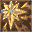 | Fake Out | Normal | Physical | 40 | 40 | 20s | Fake Out inflicts damage and makes the target flinch. |
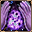 | Fake Tears | Dark | Status | – | 90 | 60s | Fake Tears lowers the target's Special Defense stat by two stages. |
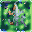 | Feather Dance | Flying | Status | – | 70 | 30s | Feather Dance lowers the target's Attack by two stages. |
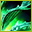 | Fell Stinger | Fighting | Physical | 50 | 60 | 10s | When the user knocks out a target with this move, the user's Attack stat rises drastically. |
| Fire Blast | Fire | Special | 110 | 120 | 27s | Fire Blast inflicts damage and has a 10% chance of burning the target. | |
| Fire Fang | Fire | Physical | 65 | 65 | 10s | Fire Fang deals damage and has a 10% chance of burning the target, plus a 10% chance of causing the target to flinch. | |
| Fire Punch | Fire | Physical | 75 | 80 | 12s | Fire Punch does damage and has a 10% chance of burning the target. | |
| Fire Spin | Fire | Special | 35 | 60 | 15s | Fire Spin does damage and lower the target's Speed by two stages. | |
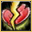 | Fissure | Ground | Physical | 110 | 110 | 17s | Fissure deals damage and has no secondary effect. |
| Flail | Normal | Physical | 100 | 100 | 18s | Flail inflicts damage. Its power is higher when the user's HP is lower. | |
| Flame Burst | Fire | Special | 70 | 80 | 16s | Flame Burst deals damage and has no secondary effect. | |
| Flame Charge | Fire | Physical | 50 | 50 | 8s | Flame Charge inflicts damage and raises the user's Speed by one level. | |
| Flame Wheel | Fire | Physical | 60 | 70 | 14s | Flame Wheel will thaw out the user if it is frozen, and then inflict damage on the target. Flame Wheel also has a 10% chance of burning the target. | |
| Flamethrower | Fire | Special | 90 | 100 | 22s | Flamethrower deals damage and has a 10% chance of burning the target. | |
| Flare Blitz | Fire | Physical | 12 | 130 | 27s | Flare Blitz will thaw out the user if it is frozen, and then inflict damage on the target. | |
| Flash Cannon | Steel | Special | 80 | 95 | 18s | Flash Cannon deals damage and has a 10% chance of lowering the target's Special Defense by one stage. | |
| Flatter | Dark | Status | – | 60 | 30s | Flattery is used to confuse the target. However, this also raises the target's Sp. Atk stat. | |
| Flower Shield | Fairy | Status | – | 100 | 60s | The user raises the Defense stat of all Grass-type Pokemon in battle with a mysterious power. | |
| Fly | Flying | Physical | 90 | 110 | 20s | Fly deals damage and has no secondary effect. | |
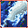 | Focus Blast | Fighting | Special | 120 | 130 | 27s | The user heightens its mental focus and unleashes its power. This may also lower the target's Sp. Def stat. |
| Focus Energy | Normal | Status | – | 70 | 60s | Increases Critical-Hit ratio by 50%. | |
| Focus Punch | Fighting | Physical | 150 | 150 | 25s | Focus Punch charge during 5 turns and then deals damage. | |
| Force Palm | Fighting | Physical | 60 | 60 | 9s | Force Palm inflicts damage and has a 30% chance of paralyzing the target. | |
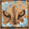 | Foresight | Normal | Status | – | 70 | 60s | Foresight removes the Ghost type's immunity to Fighting-type and Normal-type moves for any moves used against the target. |
| Foul Play | Dark | Physical | 95 | 105 | 20s | The user turns the target's power against it. The higher the target's Attack stat, the greater the move's power. | |
| Freeze-Dry | Ice | Special | 70 | 80 | 14s | The user rapidly cools the target. This may also leave the target frozen. This move is super effective on Water types. | |
| Frenzy Plant | Grass | Special | 150 | 150 | 25s | Frenzy Plant deals damage but the user can't attack on the next turn. | |
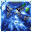 | Frost Breath | Ice | Special | 60 | 70 | 18s | The user blows its cold breath on the target. This attack always results in a critical hit. |
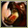 | Fury Attack | Normal | Physical | 15 | 45 | 9s | Fury Attack does damage, hitting 2-5 times per use. |
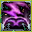 | Fury Cutter | Bug | Physical | 40 | 40 | 12s | Fury Cutter deals damage and has no secondary effect. |
| Fury Swipes | Normal | Physical | 18 | 45 | 9s | Fury Swipes inflicts damage, hitting 2-5 times per use. | |
| Future Sight | Psychic | Special | 120 | 120 | 15s | Future Sight deals damage, but does not hit until two turns after the move is selected. | |
| Gastro Acid | Poison | Status | – | 120 | 90s | The user hurls up its stomach acids on the target. The fluid eliminates the effect of the target's Ability. | |
| Giga Drain | Grass | Special | 75 | 95 | 12s | Giga Drain deals damage and the user will recover 50% of the HP drained. | |
| Giga Impact | Normal | Physical | 150 | 160 | 34s | Giga Impact deals damage but the user can't attack on the next turn. | |
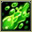 | Glare | Normal | Status | – | 15 | 13s | Glare paralyzes the target. |
| Grass Knot | Grass | Special | 80 | 80 | 12s | The user snares the target with grass and trips it. | |
| Grass Whistle | Grass | Status | – | 100 | 60s | Grass Whistle puts the target to sleep. | |
| Grassy Terrain | Grass | Status | – | 100 | 60s | The user turns the ground to grass for five turns. This restores the HP of Pokemon on the ground a little every turn. | |
| Growl | Normal | Status | – | 60 | 60s | The user growls in a cute way, making the foe lower its ATTACK. stat. | |
| Guillotine | Normal | Physical | 110 | 110 | 17s | Guillotine deals damage and has no secondary effect. | |
| Gunk Shot | Poison | Physical | 120 | 125 | 18s | Gunk Shot deals damage and has a 30% chance of poisoning the target. | |
| Gust | Flying | Special | 40 | 40 | 9s | Gust deals damage and has no secondary effect. | |
| Gyro Ball | Steel | Physical | 10 | 110 | 23s | Gyro Ball deals damage and has no secondary effect. | |
| Hail | Ice | Special | 30 | 100 | 20s | The user summons a hailstorm lasting five turns. It damages all Pokemon except the Ice type. | |
| Hammer Arm | Fighting | Physical | 100 | 100 | 15s | Hammer Arm does damage, then lowers the user's Speed by one level. | |
| Harden | Normal | Status | – | 70 | 60s | Harden raises the user's Defense by one stage. | |
| Haze | Ice | Status | – | 100 | 120s | Resets all stat changes. | |
| Head Smash | Rock | Physical | 150 | 150 | 25s | Head Smash does damage and has no secondary effect. | |
| Headbutt | Normal | Physical | 70 | 70 | 11s | Headbutt deals damage and has a 30% chance of causing the target to flinch. | |
| Heal Bell | Normal | Status | – | 120 | 90s | The user makes a soothing bell chime to heal the status conditions of all the party Pokemon. | |
| Heal Block | Psychic | Status | – | 100 | 90s | Heal Block restricts the targets from healing in certain ways for five turns. | |
| Heal Pulse | Normal | Special | 120 | 150 | 90s | Heal Pulse recover party members HP. | |
| Healing Wish | Psychic | Status | 250 | 150 | 90s | The user become with 1 HP and all party members recover full HP. | |
| Heart Stamp | Psychic | Special | 60 | 70 | 20s | The user unleashes a vicious blow after its cute act makes the target less wary. This may also make the target flinch. | |
| Heat Wave | Fire | Special | 95 | 105 | 23s | The user exhales a heated breath to attack. It may also inflict a burn. | |
| Heavy Slam | Steel | Physical | 80 | 80 | 12s | Heavy Slam does damage and has no secondary effect. | |
| Hex | Ghost | Special | 65 | 90 | 12s | Hex inflicts damage, but if the target has a status ailment (i.e. is burned, poisoned, paralyzed, asleep or frozen) it will double in power. | |
| Hi Jump Kick | Fighting | Physical | 130 | 140 | 20s | Hi Jump kick deals damage and has no secondary effect. | |
| Hone Claws | Dark | Status | – | 70 | 60s | Hone Claws raises the user's Attack by one stage. | |
| Horn Attack | Normal | Physical | 65 | 70 | 10s | Horn Attack deals damage and has no secondary effect. | |
| Horn Drill | Normal | Physical | 110 | 110 | 17s | Horn Drill deals damage and has no secondary effect. | |
| Hurricane | Flying | Special | 110 | 120 | 23s | Hurricane deals damage and has a 30% chance of confusing the target. | |
| Hydro Cannon | Water | Special | 150 | 150 | 27s | Hydro Cannon deals damage but the user can't attack on the next turn. | |
| Hydro Pump | Water | Special | 110 | 120 | 27s | Hydro Pump inflicts damage and has no secondary effect. | |
| Hyper Beam | Normal | Special | 150 | 160 | 34s | Hyper Beam deals damage but the user can't attack on the next turn. | |
| Hyper Fang | Normal | Physical | 80 | 80 | 12s | Hyper Fang deals damage and has a 10% chance of causing the target to flinch. | |
| Hyper Voice | Normal | Special | 90 | 100 | 21s | Hyper Voice inflicts damage and has no secondary effect. | |
| Hypnosis | Psychic | Status | – | 80 | 60s | Hypnosis puts the target to sleep. | |
| Ice Ball | Ice | Physical | 50 | 50 | 12s | Ice Ball does damage and has no secondary effect. | |
| Ice Beam | Ice | Special | 90 | 100 | 22s | Ice Beam inflicts damage and has a 10% chance of freezing the target. | |
| Ice Fang | Ice | Physical | 65 | 65 | 10s | Ice Fang deals damage and has a 10% chance of freezing the target, plus a 10% chance of causing the target to flinch. | |
| Ice Punch | Ice | Physical | 75 | 75 | 12s | Ice Punch does damage and has a 10% chance of freezing the target. | |
| Ice Shard | Ice | Physical | 10 | 40 | 9s | Ice Shard deals damage and has no secondary effect. | |
| Icicle Crash | Ice | Physical | 85 | 95 | 18s | The user attacks by harshly dropping large icicles onto the target. This may also make the target flinch. | |
| Icicle Spear | Ice | Physical | 25 | 90 | 18s | The user launches sharp icicles at the target two to five times in a row. | |
| Icy Wind | Ice | Special | 55 | 65 | 13s | Icy Wind deals damage and lowers the target's Speed by one stage. | |
| Incinerate | Fire | Special | 60 | 70 | 18s | Incinerate does damage and has no secondary effect. | |
| Inferno | Fire | Special | 50 | 110 | 27s | Inferno deals damage and will always burn the target if it hits. | |
| Ingrain | Grass | Status | – | 100 | 120s | The user lays roots that restore its HP on every turn. | |
| Iron Defense | Steel | Status | – | 90 | 60s | Iron Defense raises the user's Defense stat by two stages. | |
| Iron Head | Steel | Physical | 80 | 80 | 12s | Iron Head inflicts damage and has a 30% chance of causing the target to flinch. | |
| Iron Tail | Steel | Physical | 100 | 100 | 15s | Iron Tail inflicts damage and has a 10% chance of lowering the target's Defense stat by one stage. | |
| Jump Kick | Fighting | Physical | 100 | 100 | 11s | Jump Kick deals damage and has no secondary effect. | |
| Karate Chop | Fighting | Physical | 50 | 60 | 10s | Karate Chop deals damage and has an increased critical hit ratio. | |
| Knock Off | Dark | Physical | 65 | 100 | 20s | The move does more damage if the target has a held item. | |
| Last Resort | Normal | Physical | 140 | 140 | 30s | Last Resort does damage and has no secondary effect. | |
| Lava Plume | Fire | Special | 80 | 95 | 18s | Lava Plume deals damage ans has 30% of chance to burn the target. | |
| Leaf Blade | Grass | Physical | 90 | 90 | 14s | Leaf Blade deals damage and has an increased critical hit ratio. | |
| Leaf Storm | Grass | Special | 13 | 140 | 32s | Leaf Storm deals damage but lowers the user's Special Attack by two stages after attacking. | |
| Leaf Tornado | Grass | Special | 65 | 75 | 18s | Leaf Tornado deals damage and has a 30% chance of lowering the target's Accuracy by one stage. | |
| Leech Life | Bug | Physical | 20 | 35 | 7s | Leech Life inflicts damage, and up to 50% of the damage dealt to the target is restored to the user as HP. | |
| Leech Seed | Grass | Status | 5 | 65 | 20s | Leech Seed plants a seed on the target. At the end of each turn that the target is under the effect of Leech Seed, the target's HP will be drained, and the same amount of HP will be restored to the target's opponent. Leech Seed will not work against Grass-type Pokemon. | |
| Lick | Ghost | Physical | 30 | 30 | 5s | Lick deals damage and has a 30% chance of paralyzing the target. | |
| Light Screen | Psychic | Status | – | 60 | 60s | Light Screen increases user DEFENSE stat. | |
| Lovely Kiss | Normal | Status | – | 80 | 60s | Lovely Kiss causes the target to fall asleep. | |
| Low Kick | Fighting | Physical | 80 | 80 | 12s | Low Kick deals damage and has no secondary effect. | |
| Low Sweep | Fighting | Physical | 65 | 65 | 10s | The user makes a swift attack on the target's legs, which lowers the target's Speed stat. | |
| Lunge | Bug | Physical | 80 | 80 | 12s | The user makes a lunge at the target, attacking with full force. This also lowers the target's Attack stat. | |
| Luster Purge | Psychic | Special | 70 | 80 | 14s | Luster Purge inflicts damage and has a 50% chance of lowering the target's Special Defense. | |
| Mach Punch | Fighting | Physical | 40 | 40 | 6s | The user throws a punch at blinding speed. This move always goes first. | |
| Magic Coat | Psychic | Status | – | 100 | 90s | Any move is reflected back to the attacker. | |
| Magical Leaf | Grass | Special | 60 | 60 | 9s | Magical Leaf deals damage and ignores changes to the Accuracy and Evasion stats. | |
| Magnet Bomb | Steel | Physical | 60 | 70 | 14s | Magnet Bomb deals damage and ignores changes to the Accuracy and Evasion stats. | |
| Magnet Rise | Electric | Status | – | 80 | 60s | The user levitates using electrically generated magnetism for 10 seconds. | |
| Magnitude | Ground | Physical | 85 | 95 | 18s | Magnitude does not have a set base power. Instead the base power of this move varies on a magnitude scale between four and ten. | |
| Meditate | Psychic | Status | – | 75 | 60s | Meditate raises the user's Attack by one stage. | |
| Mega Drain | Grass | Special | 40 | 65 | 12s | Mega Drain inflicts damage, and 50% of the damage dealt to the target is restored to the user. The amount of HP recovered is always rounded down. | |
| Mega Kick | Normal | Physical | 120 | 120 | 18s | Mega Kick deals damage and has no secondary effect. | |
| Mega Punch | Normal | Physical | 80 | 80 | 12s | Mega Punch deals damage and has no secondary effect. | |
| Megahorn | Bug | Physical | 120 | 120 | 18s | Megahorn deals damage and has no secondary effect. | |
| Memento | Dark | Status | – | 50 | 60s | Memento causes the user to faint and in return lowers the Attack and Special Attack stat of the target by two stages each. | |
| Meowth Super Rocket | Normal | Special | 120 | 0 | 27s | ||
| Metal Burst | Steel | Physical | – | 100 | 40s | Metal Burst returns 1.5 times the damage dealt by the foe's last attack. | |
| Metal Claw | Steel | Physical | 50 | 50 | 8s | Metal Claw deals damage and has a 10% chance of raising the user's Attack by one stage. | |
| Metal Sound | Steel | Status | – | 130 | 60s | Metal Sound lowers the target's Special Defense by two stages. | |
| Meteor Mash | Steel | Physical | 90 | 100 | 23s | Meteor Mash deals damage and has a 20% chance of raising the user's Attack by one stage. | |
| Metronome | Normal | Status | – | 80 | 20s | User performs any move in the game at random. | |
| Milk Drink | Normal | Status | – | 100 | 120s | Milk Drink restores up to 50% of the user's current HP. | |
| Mimic | Normal | Status | – | 130 | 25s | Mimic copies the target's last move. If there isn't a last move, copy random. | |
| Mind Reader | Normal | Status | – | 70 | 30s | The user predicts the foe's action to ensure its next attack hits. | |
| Miracle Eye | Psychic | Status | – | 70 | 40s | Enables a Dark-type target to be hit by Psychic-type attacks. This also enables an evasive target to be hit. | |
| Mirror Coat | Psychic | Special | – | 100 | 90s | Any move is reflected back to the attacker. | |
| Mirror Move | Flying | Status | – | 130 | 25s | Mirror Move copies the target's last move. If there isn't a last move, copy random. | |
| Mirror Shot | Steel | Special | 65 | 75 | 10s | Mirror Shot deals damage and has a 30% chance of lowering the target's Accuracy by one stage. | |
| Mist | Ice | Status | – | 120 | 90s | The user cloaks itself and its allies in a white mist that prevents any of their stats from being lowered. | |
| Mist Ball | Psychic | Special | 60 | 60 | 9s | Mist Ball inflicts damage and has a 50% chance of lowering the target's Special Attack. | |
| Misty Terrain | Fairy | Status | – | 100 | 60s | This protects Pokemon on the ground from status conditions. | |
| Moonblast | Fairy | Special | 95 | 95 | 17s | Borrowing the power of the moon, the user attacks the target. This may also lower the target's Sp. Atk stat. | |
| Moonlight | Fairy | Status | – | 120 | 120s | Moonlight restores the user's current HP based on the weather conditions and time of day. Normal conditions will restore ½ of the total HP. | |
| Mud Bomb | Ground | Special | 65 | 80 | 10s | Mud Bomb deals damage and has a 30% chance of lowering the target's Accuracy by one stage. | |
| Mud Shot | Ground | Special | 55 | 60 | 9s | Mud Shot deals damage and lowers the target's Speed by one stage. | |
| Mud Sport | Ground | Status | – | 70 | 60s | The user kicks up mud on the battlefield. This weakens Electric-type users for five turns. | |
| Mud-Slap | Ground | Special | 20 | 30 | 10s | Mud-Slap deals damage and lowers the target's Accuracy by one stage. | |
| Muddy Water | Water | Special | 9 | 100 | 22s | Muddy Water deals damage and has a 30% chance of lowering the target's Accuracy by one stage. | |
| Nasty Plot | Dark | Status | – | 100 | 90s | Nasty Plot raises the user's Special Attack stat by two stages. | |
| Nature Power | Normal | Status | 80 | 100 | 18s | This attack makes use of nature's power. Its effects vary depending on the user's environment. | |
| Needle Arm | Grass | Physical | 60 | 60 | 13s | Needle Arm inflicts damage and has a 30% chance of causing the target to flinch. | |
| Night Shade | Ghost | Special | 80 | 80 | 12s | Night Shade deals damage and has no secondary effect. | |
| Night Slash | Dark | Physical | 70 | 70 | 11s | Night Slash deals damage and has an increased critical hit ratio. | |
| Nightmare | Ghost | Status | 60 | 100 | 60s | The sleeping opponent loses HP during 5 turns. | |
| Nuzzle | Electric | Physical | 20 | 30 | 15s | Nuzzle inflicts damage and paralyzes its target when it hits. | |
| Octazooka | Water | Special | 65 | 70 | 10s | The user attacks by spraying ink at the target's face or eyes. This may also lower the target's accuracy. | |
| Ominous Wind | Ghost | Special | 60 | 100 | 22s | Ominous Wind inflicts damage and has a 10% chance of raising all of the user's stats by one stage. | |
| Origin Pulse | Water | Special | 110 | 120 | 24s | Origin Pulse deals damage to all adjacent opponents. Its power is boosted by 50% when used by a Pokemon with the Ability Mega Launcher. | |
| Outrage | Dragon | Physical | 40 | 115 | 12s | User attacks for 2-3 turns and then becomes confused. | |
| Overheat | Fire | Special | 130 | 140 | 27s | An intense attack that also sharply reduces the user's SP. ATK stat. | |
| Payback | – | Physical | – | 100 | 90s | Any move is reflected back to the attacker. | |
| Peck | Flying | Physical | 35 | 35 | 6s | Peck inflicts damage and has no secondary effect. | |
| Petal Blizzard | Grass | Physical | 90 | 90 | 15s | The user stirs up a violent petal blizzard and attacks everything around it. | |
| Petal Dance | Grass | Special | 120 | 120 | 20s | The user attacks for 2-3 turns and then becomes confused. | |
| Phantom Force | Ghost | Physical | 90 | 100 | 20s | The user vanishes somewhere, then strikes the target on the next turn. | |
| Pin Missile | Bug | Physical | 25 | 60 | 9s | Pin Missile inflicts damage, hitting the target between 2-5 times per use. | |
| Play Rough | Fairy | Physical | 90 | 90 | 15s | The user plays rough with the target and attacks it. This may also lower the target's Attack stat. | |
| Pluck | Flying | Physical | 60 | 60 | 9s | The user pecks the target. If the target is holding a Berry, the user eats it and gains its effect. | |
| Poison Fang | Poison | Physical | 50 | 55 | 8s | Poison Fang inflicts damage and has a 30% chance of badly poisoning the target. | |
| Poison Gas | Poison | Status | – | 30 | 7s | Poison Gas poisons the target. It will fail if the target is Poison or Steel-type. | |
| Poison Jab | Poison | Physical | 80 | 80 | 12s | Poison Jab inflicts damage and has a 30% chance of poisoning the target. | |
| Poison Powder | Poison | Status | – | 30 | 20s | Poison Powder poisons the target. | |
| Poison Sting | Poison | Physical | 15 | 20 | 5s | Poison Sting inflicts damage and has a 30% chance of poisoning the target. | |
| Poison Tail | Poison | Physical | 50 | 55 | 9s | Poison Tail deals damage and has an increased critical hit ratio. It has a 10% chance of poisoning the target. | |
| Pound | Normal | Physical | 40 | 40 | 6s | Pound inflicts damage and has no secondary effect. | |
| Powder Snow | Ice | Special | 40 | 50 | 9s | Powder Snow inflicts damage and has a 10% chance of freezing the target. | |
| Power Gem | Rock | Special | 80 | 90 | 16s | Power Gem inflicts damage and has no secondary effect. | |
| Power Whip | Grass | Physical | 120 | 120 | 18s | Power Whip inflicts damage and has no secondary effect. | |
| Power-Up Punch | Fighting | Physical | 40 | 50 | 8s | Power-Up Punch does damage and raises the user's Attack by one stage. | |
| Precipice Blade | Ground | Physical | 120 | 120 | 18s | Precipice Blade does damage and has no secondary effect. | |
| Present | Normal | Physical | 80 | 100 | 15s | Present has two different effects. Present can either deal damage against the target or heal the target. | |
| Protect | Normal | Status | – | 70 | 60s | Protect raises the user's Defense by two stages. | |
| Psybeam | Psychic | Special | 65 | 70 | 16s | Psybeam deals damage and has a 10% chance of confusing the target. | |
| Psychic | Psychic | Special | 90 | 100 | 21s | Psychic deals damage and has a 10% chance of lowering the target's Special Defense by one stage. | |
| Psychic Fangs | Psychic | Physical | 85 | 85 | 18s | The user bites the target with its psychic capabilities. This can also destroy Light Screen and Reflect. | |
| Psycho Boost | Psychic | Special | 140 | 140 | 24s | Psycho Boost inflicts damage and lowers the user's Special Attack stat by two stages. | |
| Psycho Cut | Psychic | Physical | 7 | 80 | 16s | Psycho Cut deals damage and has an increased critical hit ratio. | |
| Psycho Shift | Psychic | Status | – | 100 | 100s | Psycho Shift transfers any non-volatile status ailment from the user to the target, curing the user in the process. It will not transfer volatile status ailments (confusion, etc.). | |
| Psyshock | Psychic | Special | 80 | 85 | 12s | The user materializes an odd psychic wave to attack the target. This attack does physical damage. | |
| Psystrike | Psychic | Special | 100 | 110 | 23s | The user materializes an odd psychic wave to attack the target. This attack does physical damage. | |
| Psywave | Psychic | Special | – | 100 | 15s | Psywave inflicts a random amount of HP damage, varying by user's level. | |
| Punishment | Dark | Physical | 60 | 100 | 20s | Punishment deals varying damage based on the opponent's stat increases. It starts at base power 60 and increases by 20 for every net stat boost of the opponent. | |
| Pursuit | Dark | Physical | 40 | 40 | 6s | Pursuit deals damage and has no secondary effect. | |
| Quick Attack | Normal | Physical | 40 | 40 | 6s | Quick Attack deals damage and has no secondary effect. | |
| Quick Guard | Fighting | Status | – | 100 | 60s | The user protects itself and its allies from the next damage. | |
| Quiver Dance | Bug | Status | – | 70 | 60s | Quiver Dance raises the user's Special Attack, Special Defense and Speed by one stage each. | |
| Rage | Normal | Physical | 20 | 100 | 15s | Rage inflicts damage, hitting the target 2-5 times per use. | |
| Rage Powder | Bug | Status | – | 90 | 25s | Rage Powder redirects all single-target opponents to itself. | |
| Rain Dance | Water | Status | – | 100 | 60s | Raind Dance raises the user's Attack and Defense by one stage. | |
| Rapid Spin | Normal | Physical | 4 | 70 | 15s | Rapid Spin deals a small amount of damage and removes the effects of several 'trap' moves. | |
| Razor Leaf | Grass | Physical | 18 | 60 | 7s | Razor Leaf deals damage and has an increased critical hit ratio. | |
| Razor Shell | Water | Physical | 75 | 75 | 12s | Razor Shell deals damage and has a 50% chance of lowering the target's Defense by one stage. | |
| Razor Wind | Normal | Special | 80 | 80 | 15s | The user of Razor Wind will 'whip up a whirlwind' on the first turn. On the second turn, Razor Wind deals damage and has an increased critical hit ratio. | |
| Recover | Normal | Status | – | 90 | 120s | User recovers 50% of its max HP. | |
| Reflect | Psychic | Status | – | 100 | 90s | Any move is reflected back to the attacker. | |
| Reflect Type | Normal | Status | – | 90 | 90s | The user reflects the target's type, making it the same type as the target. | |
| Refresh | Normal | Status | – | 60 | 60s | Cures paralysis, poison, and burns. | |
| Rest | Psychic | Status | – | 100 | 180s | User sleeps for 5 seconds, but user is fully healed. | |
| Revenge | Fighting | Physical | 120 | 120 | 18s | Revenge charge during 5 turns and then deals damage. | |
| Reversal | Fighting | Physical | 90 | 90 | 14s | Reversal deals more damage the lower the target HP. | |
| Roar | Normal | Status | – | 80 | 40s | Roar lower foe defenses by two stages. | |
| Rock Blast | Rock | Physical | 25 | 40 | 5s | Rock Blast inflicts damage, hitting the target 2-5 times per use. | |
| Rock Climb | Normal | Physical | 90 | 90 | 14s | The user attacks the target by smashing into it with incredible force. This may also confuse the target. | |
| Rock Slide | Rock | Physical | 38 | 85 | 17s | Rock Slide deals damage and has a 30% chance of causing the target to flinch. | |
| Rock Throw | Rock | Physical | 50 | 50 | 8s | Rock Throw deals damage and has no secondary effect. | |
| Rock Tomb | Rock | Physical | 60 | 70 | 13s | Rock Tomb does damage and lowers the opponent's speed one stage. | |
| Rocket Missile | Fire | Special | 40 | 0 | 6s | ||
| Role Play | Psychic | Status | – | 100 | 60s | The user mimics the target completely, copying the target's natural Ability. | |
| Rolling Kick | Fighting | Physical | 6 | 100 | 40s | Rolling Kick deals damage and has a 30% chance of causing the target to flinch. | |
| Rollout | Rock | Physical | 5 | 70 | 35s | Rollout inflicts damage over five turns and raises the user's Speed by two stages. | |
| Roost | Flying | Status | – | 90 | 120s | User recovers half of its max HP. Flying types temporarily lose Ground type immunity. | |
| Sacred Fire | Fire | Physical | 100 | 110 | 23s | The target is razed with a mystical fire of great intensity. This may also leave the target with a burn. | |
| Safeguard | Normal | Status | – | 100 | 90s | The user's party is protected from status conditions. | |
| Sand Tomb | Ground | Physical | 7 | 45 | 15s | Sand Tomb inflicts damage, hiting the target 5 times per use and lower the Speed of the target by two stages. | |
| Sand-Attack | Ground | Status | – | 25 | 10s | Sand-Attack lowers the target's Accuracy by one stage. | |
| Sandstorm | Rock | Status | – | 90 | 90s | A five-turn sandstorm is summoned to hurt all combatants except the Rock, Ground, and Steel types. It raises the Sp. Def stat of Rock types. | |
| Scald | Water | Special | 80 | 90 | 19s | The user shoots boiling hot water at its target. This may also leave the target with a burn. | |
| Scary Face | Normal | Status | 1 | 40 | 15s | Scary Face lowers the target's Speed by two stages. | |
| Scratch | Normal | Physical | 40 | 40 | 6s | Scratch inflicts damage and has no secondary effect. | |
| Screech | Normal | Status | – | 100 | 35s | Screech lowers the target's Defense by two stages. | |
| Secret Power | Normal | Physical | 70 | 80 | 17s | An attack that may have an additional effect that varies with the terrain. | |
| Seed Bomb | Grass | Physical | 80 | 85 | 12s | The user slams a barrage of hard-shelled seeds down on the target from above. | |
| Seismic Toss | Fighting | Physical | 80 | 80 | 12s | Seismic Toss deals damage and has no secondary effect. | |
| Selfdestruct | Normal | Physical | 200 | 80 | 120s | Resembling a weaker version of Explosion, Selfdestruct inflicts damage, and causes the user to faint. | |
| Shadow Ball | Ghost | Special | 80 | 80 | 12s | Shadow Ball deals damage and has a 20% chance of lowering the target's Special Defense by one stage. | |
| Shadow Claw | Ghost | Physical | 70 | 70 | 16s | The user slashes with a sharp claw made from shadows. Critical hits land more easily. | |
| Shadow Punch | Ghost | Physical | 60 | 60 | 9s | Shadow Punch inflicts damage and is unaffected by modifications to the Accuracy stat and Evasion stat. | |
| Shadow Sneak | Ghost | Physical | 40 | 40 | 11s | Shadow Sneak deals damage and has no secondary effect. | |
| Sheer Cold | Ice | Special | – | 100 | 30s | The foe is attacked with a blast of absolute-zero cold dealing damage equal to the opponent's 30% HP. It will fail if the target's level is higher than the user's level. Ice-type Pokemon era immune to Sheer Cold. | |
| Shell Smash | Normal | Status | – | 70 | 30s | The user breaks its shell, which lowers Defense and Sp. Def stats but sharply raises its Attack, Sp. Atk, and Speed stats. | |
| Shock Wave | Electric | Special | 60 | 60 | 15s | Shock Wave inflicts damage and is unaffected by modifications to the Accuracy stat and Evasion stat. | |
| Signal Beam | Bug | Special | 75 | 85 | 17s | Signal Beam deals damage and has a 10% chance of confusing the target. | |
| Silver Wind | Bug | Special | 60 | 70 | 14s | Silver Wind deals damage and has a 10% chance of raising the user's Attack, Defense, Special Attack, Special Defense and Speed by one stage each. | |
| Simple Beam | Normal | Status | – | 50 | 60s | The user's mysterious psychic wave changes the target's Ability to Simple. | |
| Sing | Normal | Status | – | 100 | 120s | Sing puts the target to sleep. | |
| Sketch | Normal | Status | – | 100 | 3s | Sketch allows the user to copy the opponent's last move permanently, therefore replacing Sketch. | |
| Skull Bash | Normal | Physical | 130 | 130 | 15s | Increases Defense on first turn, attacks on second turn. | |
| Sky Attack | Flying | Physical | 140 | 140 | 24s | Nothing will happen on the first turn. On the second turn, Sky Attack deals damage and has a 30% chance of causing the target to flinch. | |
| Sky Drop | Flying | Physical | 60 | 70 | 20s | The user takes the target into the sky, then drops it during the next turn. The target cannot attack while in the sky. | |
| Sky Uppercut | Fighting | Physical | 85 | 85 | 18s | The user attacks the target with an uppercut thrown skyward with force. | |
| Slam | Normal | Physical | 80 | 80 | 12s | Slam inflicts damage and has no secondary effect. | |
| Slash | Normal | Physical | 70 | 70 | 11s | Slash deals damage and has an increased critical hit ratio. | |
| Sleep Powder | Normal | Status | – | 85 | 100s | Sleep Powder puts the target to sleep. | |
| Sleep Talk | Normal | Status | – | 90 | 20s | While it is asleep, the user randomly uses one of the moves it knows. | |
| Sludge | Poison | Special | 65 | 70 | 10s | Sludge does damage and has a 30% chance of poisoning the target. | |
| Sludge Bomb | Poison | Special | 90 | 105 | 21s | Sludge Bomb inflicts damage and has a 30% chance of poisoning the target. | |
| Sludge Wave | Poison | Special | 9.5 | 105 | 22s | Sludge Wave inflicts damage and has a 10% chance of poisoning the target. | |
| Smack Down | Rock | Physical | 50 | 50 | 9s | The user throws a stone or similar projectile to attack an opponent. A flying Pokemon will fall to the ground when it's hit. | |
| Smelling Salts | Normal | Physical | 70 | 90 | 16s | Smelling Salts deals damage. Its base power will double against a paralyzed target, but it will also cure the target of paralysis. | |
| Smog | Poison | Special | 30 | 45 | 10s | Smog inflicts damage and has a 40% chance of poisoning the target. | |
| Smoke Screen | Normal | Status | – | 50 | 15s | Smoke Screen lowers the target's Accuracy by one stage. | |
| Snore | Normal | Special | 50 | 60 | 10s | Snore can only be used whilst the user is sleeping and will fail if the user is not. | |
| Softboiled | Normal | Status | – | 95 | 120s | User recovers 50% of its max HP. | |
| Solar Beam | Grass | Special | 120 | 125 | 27s | Solar Beam deals damage but the user can't attack on the next turn. | |
| Sonic Boom | Normal | Special | 40 | 45 | 6s | Sonic Boom deals damage and has no secondary effect. | |
| Spark | Electric | Physical | 65 | 75 | 16s | Spark inflicts damage and has a 30% chance of paralyzing the target. | |
| Spider Web | Bug | Status | – | 60 | 20s | Spider Web paralyzes the target. | |
| Spike Cannon | Normal | Physical | 20 | 80 | 5s | Spike Cannon inflicts damage, hitting the target 2-5 times per use. | |
| Spiky Shield | Grass | Status | – | 100 | 60s | Spiky Shield protects the user from all effects of moves that target the user during the turn it is used, including damage. | |
| Spit Up | Normal | Special | 100 | 150 | 30s | Spit Up deals varying damage depending on how many times the user used Stockpile. The base power is 100, 200 or 300 if the user stockpiled one, two or three times respectively. | |
| Spite | Ghost | Status | – | 10 | 30s | The user drain 100-200 energy from the target. | |
| Splash | Normal | Status | 20 | 20 | 5s | Splash deals damage and has no secondary effect. | |
| Spore | Normal | Status | – | 65 | 100s | Spore puts the target to sleep. | |
| Stealth Rock | Rock | Status | 100 | 120 | 25s | Stealth Rock deals damage and lower the Speed of the target by two stages. | |
| Steel Wing | Steel | Physical | 70 | 85 | 18s | Steel Wing inflicts damage and has a 10% chance of raising the user's Defense. | |
| Stockpile | Normal | Status | – | 90 | 10s | Raises the user's Defense and Special Defense by one stage and charges up power for use with companion moves Spit Up or Swallow. | |
| Stomp | Normal | Physical | 65 | 75 | 9s | Stomp deals damage and has a 30% chance of causing the target to flinch. | |
| Stone Edge | Rock | Physical | 100 | 100 | 15s | Stone Edge deals damage and has an increased critical hit ratio. | |
| Stored Power | Psychic | Special | 20 | 80 | 18s | Stored Power deals variable damage depending on the stat modifications of the user. When the user has no stat modifications, Stored Power's base power is 20. Its power increases by 20 for each stat boost the user has. | |
| String Shot | Normal | Status | 1 | 15 | 8s | String Shot lowers the target's Speed by one stage. | |
| Struggle Bug | Bug | Special | 50 | 50 | 8s | While resisting, the user attacks the opposing Pokemon. This lowers the Sp. Atk stat of those hit. | |
| Stun Spore | Normal | Status | – | 55 | 10s | Stun Spore paralyzes the target. | |
| Submission | Fighting | Physical | 80 | 80 | 12s | Submission deals damage and has no secondary effect. | |
| Substitute | Normal | Status | – | 200 | 120s | Creates a replacement who will take all the damage. During this the user can't use any move. | |
| Sucker Punch | Dark | Physical | 80 | 80 | 12s | Sucker Punch deals damage and has no secondary effect. | |
| Sunny Day | Fire | Status | – | 80 | 60s | Sunny Day increase's user ATTACK and DEFENSE stats. | |
| Super Fang | Normal | Physical | 100 | 100 | 15s | Super Fang does damage and has no secondary effect. | |
| Superpower | Fighting | Physical | 120 | 120 | 20s | Superpower deals damage but lowers the user's Attack and Defense by one stage each after attacking. | |
| Supersonic | Normal | Status | – | 20 | 14s | Supersonic causes the target to become confused. | |
| Surf | Water | Special | 90 | 100 | 21s | Surf inflicts damage and has no secondary effect. | |
| Swallow | Normal | Status | – | 90 | 120s | Swallow recovers a varying amount of HP depending on how many times the user has used Stockpile. It recovers 25%, 50% or 100% of the user's maximum HP if the user stockpiled one, two or three times respectively. | |
| Sweet Kiss | Fairy | Status | – | 60 | 20s | Sweet Kiss causes the target to become confused. | |
| Swift | Normal | Special | 60 | 60 | 9s | Swift deals damage and ignores changes to the Accuracy and Evasion stats. | |
| Swords Dance | Normal | Status | – | 100 | 60s | Swords Dance raises the user's Attack by two stages. | |
| Synchronoise | Psychic | Special | 120 | 130 | 27s | Using an odd shock wave, the user inflicts damage on any Pokemon of the same type in the area around it. | |
| Synthesis | Grass | Status | – | 150 | 120s | Synthesis restores the user's current HP based on the weather conditions. Under normal conditions Synthesis will restore ½ of the user's total HP. | |
| Tackle | Normal | Physical | 15 | 15 | 1s | Tackle is one of the most common and basic moves a Pokemon learns. It deals damage with no additional effects. | |
| Tailwind | Flying | Status | – | 80 | 40s | Tailwind doubles the speed of all Pokemon in the user's party for 10 seconds. | |
| Take Down | Normal | Physical | 90 | 90 | 14s | Take Down deals damage and has no secondary effect. | |
| Thief | Dark | Physical | 60 | 70 | 13s | The user attacks and steals the target's held item simultaneously. The user can't steal anything if it already holds an item. | |
| Thrash | Normal | Physical | 40 | 115 | 12s | The user attacks for 2-3 turns and then becomes confused. | |
| Thunder | Electric | Special | 110 | 120 | 27s | Thunder deals damage and has a 30% chance of paralyzing the target. | |
| Thunder Fang | Electric | Physical | 65 | 65 | 10s | Thunder Fang deals damage and has a 10% chance of paralyzing the target, plus a 10% chance of causing the target to flinch. | |
| Thunder Punch | Electric | Physical | 75 | 75 | 12s | Thunder Punch does damage and has a 10% chance of paralyzing the opponent. | |
| Thunder Shock | Electric | Special | 40 | 40 | 6s | Thunder Shock inflicts damage and has a 10% chance of paralyzing the target. | |
| Thunder Wave | Electric | Status | – | 40 | 10s | Thunder Wave paralyzes the target. Thunder Wave will not work against Ground types. | |
| Thunderbolt | Electric | Special | 30 | 85 | 14s | Thunderbolt does damage and has a 10% chance of paralyzing the target. | |
| Tickle | Normal | Status | – | 90 | 60s | Tickle reduces the target's Attack and Defense stat by one stat level each. | |
| Toxic | Poison | Status | – | 90 | 20s | Toxic causes the target to be badly poisoned. | |
| Toxic Spikes | Poison | Status | 10 | 70 | 8s | Toxic Spikes deals damage and inflicts Poison, if the target already is Poisoned then inflicits Badly Poison. | |
| Transform | Normal | Status | – | 0 | 120s | User takes on the form and attacks of the opponent. | |
| Tri Attack | Normal | Special | 80 | 75 | 12s | Tri Attack deals damage and has a 20% chance of paralyzing, burning or freezing the target - i.e. a 6.67% chance of each status condition. | |
| Triple Kick | Fighting | Physical | 10 | 80 | 15s | Triple Kick deals damage and has no secondary effect. | |
| Twineedle | Bug | Physical | 25 | 55 | 8s | Twineedle deals damage and will strike twice (with 25 base power each time). It has a 20% chance of poisoning the target, except for Poison or Steel types which cannot be poisoned. | |
| Twister | Dragon | Special | 40 | 50 | 9s | Twister deals damage and has a 30% chance of causing the target to flinch. | |
| U-turn | Bug | Physical | 70 | 70 | 16s | U-turn does damage and has no secondary effect. | |
| Uproar | Normal | Special | 90 | 100 | 25s | The user attacks in an uproar for three turns. During that time, no Pokemon can fall asleep. | |
| Venom Drench | Poison | Status | – | 50 | 30s | Opposing Pokemon are drenched in an odd poisonous liquid. This lowers the Attack, Sp. Atk, and Speed stats of a poisoned target. | |
| Venoshock | Poison | Special | 65 | 75 | 16s | Venoshock inflicts damage and its power will double to 130 when the target is poisoned. | |
| Vice Grip | Normal | Physical | 55 | 55 | 9s | Vice Grip inflicts damage and has no secondary effect. | |
| Vine Whip | Grass | Physical | 45 | 50 | 8s | Vine Whip inflicts damage and has no secondary effect. | |
| Vital Throw | Fighting | Physical | 70 | 70 | 11s | Vital Throw deals damage and ignores changes to the Accuracy and Evasion stats. | |
| Volt Switch | Electric | Special | 70 | 70 | 11s | Volt Switch does damage and has no secondary effect. | |
| Wake-Up Slap | Fighting | Physical | 70 | 75 | 9s | Wake-Up Slap deals damage and will have double the power when the target is sleeping. It will also wake the target up. | |
| Water Gun | Water | Special | 40 | 45 | 9s | Water Gun inflicts damage and has no secondary effect. | |
| Water Pulse | Water | Special | 60 | 65 | 9s | Water Pulse deals damage and has a 20% chance of confusing the target. | |
| Water Sport | Water | Status | – | 60 | 60s | Water Sport increases user ATTACK and DEFENSE stats. | |
| Waterfall | Water | Physical | 80 | 90 | 15s | Waterfall does damage and has a 20% chance of causing the target to flinch. | |
| Weather Ball | Normal | Special | 50 | 70 | 15s | This attack move varies in power and type depending on the weather. | |
| Whirlpool | Water | Special | 35 | 100 | 20s | The user traps the target in a violent swirling whirlpool for four to five turns. | |
| Wild Charge | Electric | Physical | 90 | 100 | 15s | The user shrouds itself in electricity and smashes into its target. | |
| Will-O-Wisp | Fire | Status | 1 | 20 | 8s | Will-O-Wisp inflicts a burn on the target. It has no effect on Fire-type Pokemon. | |
| Wing Attack | Flying | Physical | 60 | 70 | 14s | Wing Attack inflicts damage and has no secondary effect. | |
| Wish | Normal | Status | – | 100 | 90s | The turn Wish is used, the user will make a wish. At the end of the next turn, the Pokemon will be healed by half its own maximum HP. | |
| Wood Hammer | Grass | Physical | 120 | 120 | 27s | Wood Hammer inflicts damage and has no secondary effect. | |
| Worry Seed | Grass | Status | – | 50 | 30s | Worry Seed inflicits an Insonia to the target. With this effect, the target Pokemon cannot sleep and wakes up if already asleep. | |
| Wrap | Normal | Physical | 35 | 45 | 13s | Wrap deals damage and lower the Speed of the target by two stages. | |
| Wring Out | Normal | Special | 120 | 90 | 18s | The power of Wring Out varies between 1 and 120 depending on how much HP the opponent has. The more HP the opponent has, the more damage this move will do. Its damage is calculated by the following formula: Base Power = 120 x (Opponent's Current HP/Opponent's Maximum HP) | |
| X-Scissor | Bug | Physical | 80 | 90 | 18s | X-Scissor deals damage and has no secondary effect. | |
| Yawn | Normal | Status | – | 100 | 95s | In the turn that Yawn is used, the only effect will be the user yawning at the target. At the end of the next turn, the target (if still active) will fall asleep unless it gets affected by a major status condition in the meantime, a status-protecting move is used (like Safeguard or Uproar), or the battle ends. | |
| Zap Cannon | Electric | Special | 120 | 130 | 27s | Zap Cannon deals damage and paralyzes the target. | |
| Zen Headbutt | Psychic | Physical | 80 | 80 | 15s | Zen Headbutt deals damage and has a 20% chance of causing the target to flinch. |